Guia de Estilo
1. Introdução
O guia de estilo é um registro das principais decisões tomadas pelos designers, para que estas não se percam, e que sejam incorporadas ao produto final.
2. A Quem se Destina ?
- Este guia de estilo pode beneficiar:
- Programadores
- Gerentes
- Equipe de Suporte
3. Estrutura dos Templates
3.1 Tipografia
A principal família tipográfica é a Arial e suas variações de estilos.A segunda família é a Helvetica. A terceira família é composta por Tahoma e Geneva sendo utilizadas em labels.
Em casos em que não for possível definir a família tipográfica, deve-se utilizar fontes do tipo “Sans Serif” (sem serifa).
ARIAL
ARIAL REGULAR

ARIAL BOLD
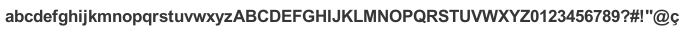
HELVETICA
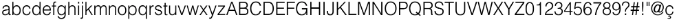
HELVETICA REGULAR
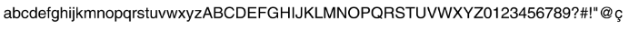
HELVETICA BOLD
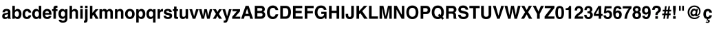
3.2 Cores
Cores em RGB e hexadecimal. Em cabeçalhos e rodapés a cor branca é substituida por um tom de cinza com o intuito de não gerar um contrates com o corpo do Site.
Principais
Secundárias
3.3 Links
Normal(#006600)
Ativado(#66CC00)
3.4 Icones
Icones de Acessibilidade
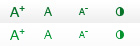
Icones Redes Sociais
4. Elementos da Estrutura Principal
Elementos Padrão de toda estrutura do site.
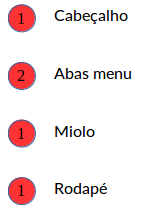
Estes elementos devem estar presente em todas as paginas.
4.1 Cabeçalho
O cabeçalho (header) traz as informações básicas de identificação de um site como o nome, a qual ministério está subordinado, além dos menus de serviço, acessibilidade e redes sociais e a ferramenta de busca.
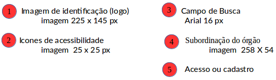
4.2 Menu
As abas devem se localizar logo abaixo do cabeçalho. Abas ao ser selecionada a aba deve apresentar uma mudança de cor de ciza para amarelo.
Aba Normal
Cor: #ddd
Fonte: ARIAL
Tamanho fonte: 12px
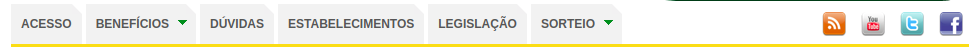
Aba Ativada
Cor: #fed23b
Fonte: ARIAL
Tamanho fonte: 12px
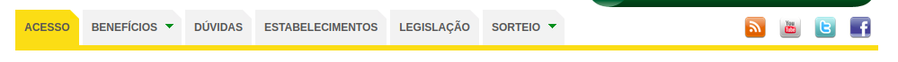
4.3 Abas
Acesso
Benefícios
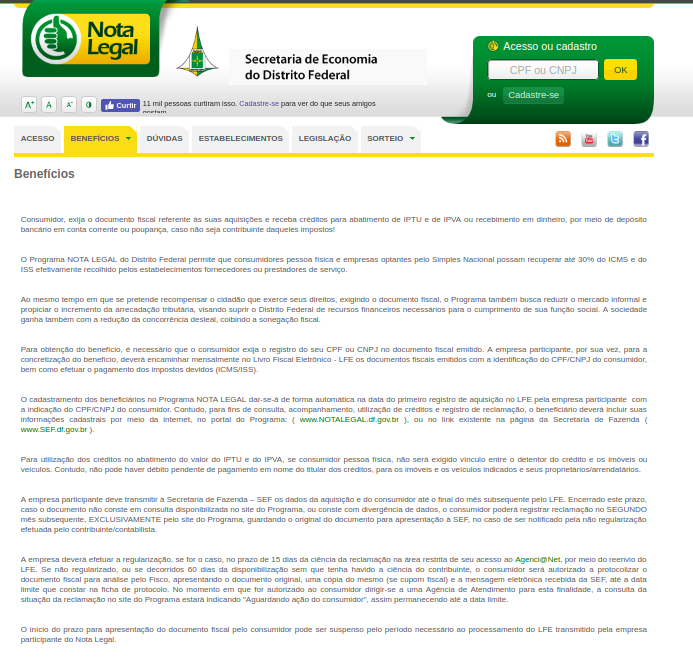 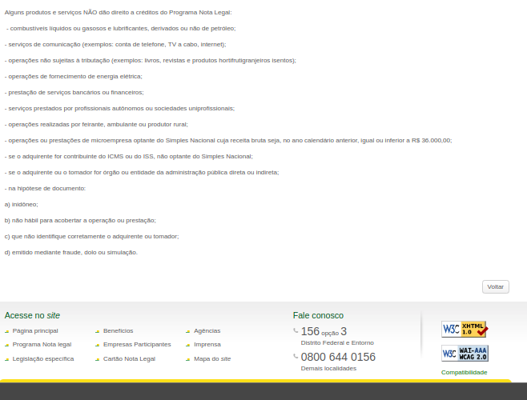
Dúvidas
Estabelecimentos
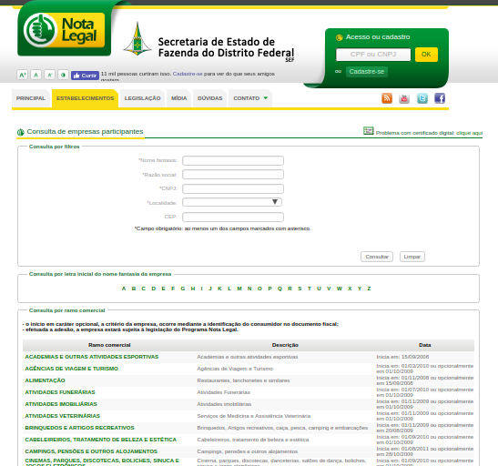
Legislação
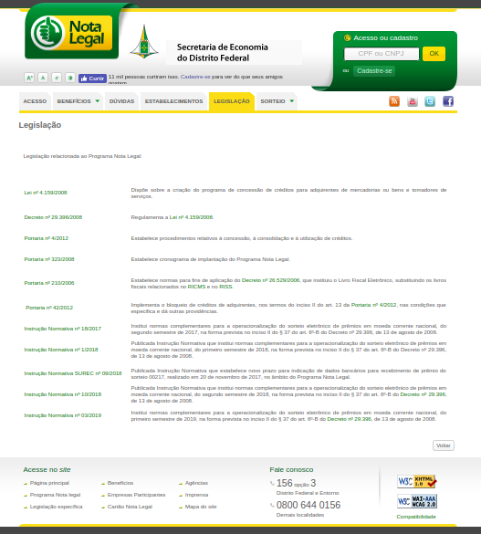
Referências Bibliográficas
Enclycopedia, Disponível em :https://encycolorpedia.pt/
Guia de Estilo do Portal Institucional Padrão, Disponível em: http://www.secom.gov.br/orientacoes-gerais/comunicacao-digital/guia-de-estilo-identidade-padrao-comunicacao-digital-fev2015.pdf?
Histórico de versões
| Data | Versão | Descrição | Autor(es) |
|---|---|---|---|
| 13/09/19 | 1.0 | Criação do documento | Moacir Mascarenha |
| 05/10/19 | 1.1 | Adição do documento no repositório | Moacir Mascarenha |